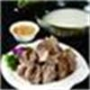
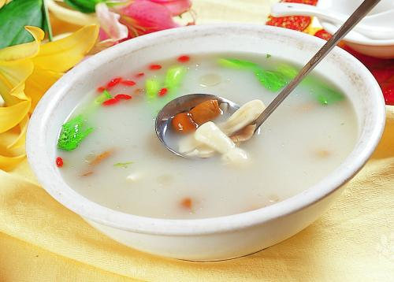
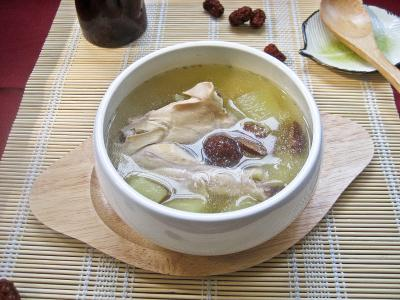
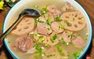
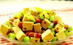
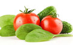

食疗食补

滋补养生的8种食物，冬天吃更合适
冬季是一个养生的好时机，所以平时得多吃些滋补又养生的食物，那么冬季吃什么养生呢？...

冬季饮食养生，喝好3种汤
冬季适当的喝一些粥和汤对身体是有很多好处的，今天就来跟大家说一说冬季喝汤的注意事项以及冬季该喝什么汤？...

气虚两虚，补气血7道方案来袭
气血不足是很常见的现象，尤其是气血不足更多的出现在女人身上，现在到了冬季，气血不足的可以利用这段时间...

推荐6个补血小秘方
贫血的人有很多，而且贫血是一件很难受的事，多数人因为工作的压力不在乎身体的健康状况，即使有贫血...

为骨质疏松加强营养的10种食疗方法
骨质疏松多发于中老年人，原因有多种，除了药物治疗以及适当运动外，还需加强营养。那么，骨质疏松的食疗方法有哪些？...

冬季吃7种蔬菜，给身体加加热
冬季天气寒冷，我们的身体也正在经受着考验，此时应该多食用一些有养生效果的东西来给身体增加热量，给身体提供充足的营养...